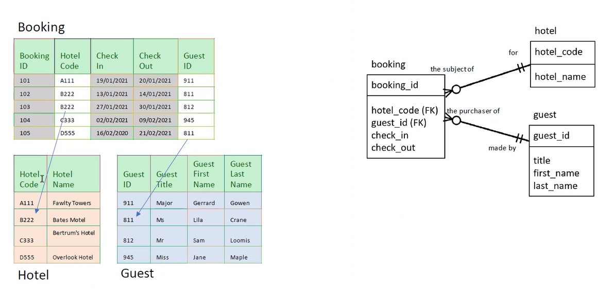
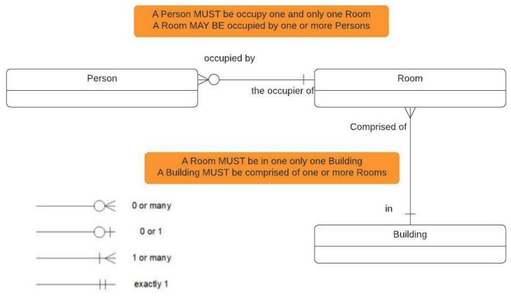
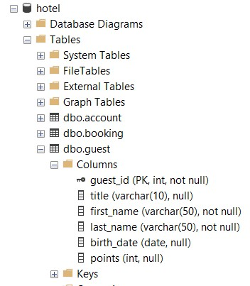
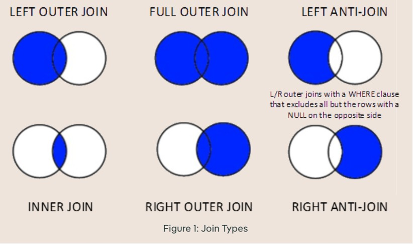
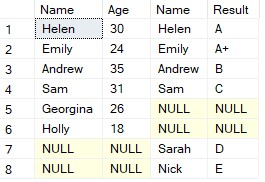
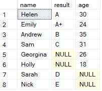
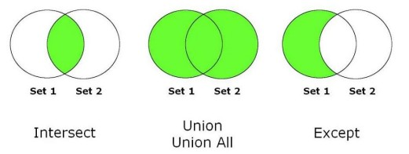
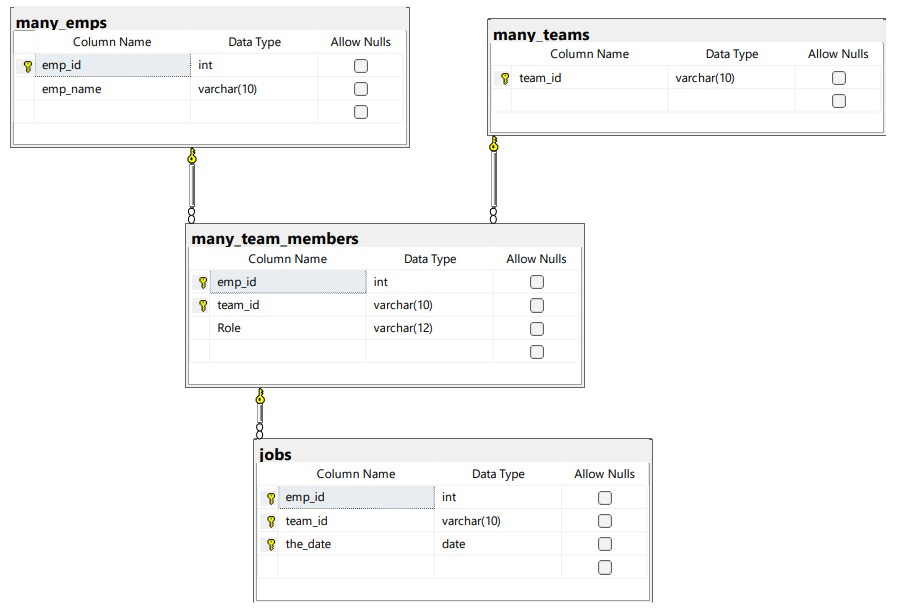

Model - abstract representation
In computing type of abstraction either designed for or existing in a system, especially as a way of describing data structures or computations
Data modelling covers a range of activities:
Designing a database
Describing a business scenario or concept, aid the understanding of a business
Designing interfaces for information interchange
Designing in-memory data structures to be used within an application
Inventing the relational model was to create logical layer of abstraction with expressive power that woud insulate users from the underlying details of physical storage.
Entity Relationsip Diagram (Model) (ERD) - model which consits of the following components:
things, usually nouns (e.g. person, building, etc)
details about the entity (e.g. name, dob, etc)
how entities relate to each other (e.g. person may own one or more buildings)
entity identifiers, attribute(s) that uniquely identify an entity (e.g. NIN uniquely identifies a person)
Entity - a thing of significance to the business with a distinct and independent existence)

Describe a business scenario or concept and as an aid business understanding
Ensure Referential Integrity, the dat a is complete, consistent and makes sense
Designing Relational Database Systems, Tables, etc

Example uses IE notation, Martin or Crow's Feet notation
The symbols define the participation or also known as optionality (zero in this case)and the cardinality (many in this case)
A building MUST (--|--) comprise of ONE OR MORE (--<) rooms.
A room MUST (--||--) be in ONE AND ONLY ONE building.
A person MUST ??? (-||-) occupy ONE AND ONLY ONE room.
A room MAY BE (-O-) occupied by ONE OR MORE (--<) persons.
erDiagram
HOTEL{
string hotel_name
int hotel_code
}
GUEST{
int guest_id
string first_name
string last_name
}
BOOKING{
int booking_id
int hotel_code
date check_in
date check_out
}
HOTEL ||--o{ BOOKING: "for/the subject of"
GUEST o|--o{ BOOKING: "made by/the purchaser of"
The above can be described in the the following way:
a HOTEL - MUST BE - made up of - ZERO OR MORE - BOOKING
a BOOKING - MUST BE - for - ONE AND ONLY ONE - HOTEL
a BOOKING - MAY BE - made by - ZERO OR ONE - GUEST
a GUEST - MUST BE - the purchaser of - ZERO OR MORE - BOOKING
Many-to-Many Relationships:
erDiagram
TEAM{
int team_code
string fteam_name
string location
}
EMPLOYEE{
int emp_id
string first_name
string last_name
}
TEAM }o--o{ EMPLOYEE: "made up of/ a member of"
An EMPLOYEE - MAY BE - a member of - ONE OR MORE - TEAMS
A TEAM - MAY BE - made up of - ONE OR MORE - EMPLOYEE
Attributes and Columns:
Attributes are implemented in a Relational Databse as columns in a Table.
Relationship/Rules and Constraints:
Relationships are associations among entities, e.g a person (entity) purchases one or more products (entity).
Example of rules:
what type of values are permitted for an Attribute?
What range of values are permitted for an Attribute?
Which Attributes are mandatory or optional?
Which Attributes are required to be unique for a given Entity?
What constraints are there on how one Entity can be related to another?
Relationship and Rules are implemented in a Relational Database as Constraints.
| ER Relationship | Relational DB |
|---|---|
| Relationship Foreign | Key Constraint |
| Value Types | Data Type |
| Range of Values | Check Constraint |
| Optional / Mandatory | Not Null Constraint |
| Unique Attributes | Primary/Unique Key Constraint |
Top-down:
start with the business domain,
identify entities first then add relationships,
rules and attributes
Bottom-up:
start with the attributes,
identify relationships and rules,
then group attributes together into entities
They are attributes, the values of which are required to be unique across all the data in a table. This contributes to Data Integrity to prevent duplicates.
Identification is important to users of a database because users need a reliable way to relate the facts recorded in the database to real world objects and concepts.
Understanding - To fully understand what the Entity (Thing) is, you need to know the Unique or Primary key
Keys must be irreducible as well as unique. Irreducible (minimal) just means that every attribute is necessary to achieve uniqueness. (e.g. House number and Postcode maybe the key to an Address Entity. Neither House Number or Postcode on their own are enough to identify a specific address.)
Simplicity - Simple, easy to comprehend identifiers will be easier to read, copy and work with. Example: “IL0A” versus “PERMANENT TSB GROUP HOLDINGS PLC”.
Stability - Key values should change infrequently (or ideally not at all). Stability is always a relative measure, however. Absolute immutability is very difficult to predict or enforce.
Familiarity - Keys that users of the system will know about, can understand or are already familiar with.
Business keys are also called natural keys or domain keys.
There is another kind of key: a surrogate key. Alternative names sometimes used:technical key; artificial key. These are used usually only inside the database, they can simplify code and make certain processes more efficient. Surrogate keys are usually expected to be stable!
| Business or Natural Key | Surrogate Key |
|---|---|
| Exposed to users and part of the business process | Hidden and not used in the business process |
| Can be externally assigned or system-assigned | System-Assigned |
| Requires additional storage space; additional constraints and indexes | |
| Potentially fewer joins and simpler processing | Requires additional surrogate key processing and additional joins because of the need to map external business keys to their surrogates and vice versa |
| Could be any number of attributes, any size | Usually small – single integer column, 4 bytes is typical |
| May be subject to change | Expected to be less likely to change |
Unique key
A set of attributes (i.e. one or more attributes) whose values, in combination, must be unique
An Entity can have more than one Unique key
Types of Unique Keys
Primary Key
Some Entities will have more than one set of attributes, the values of which, must be unique i.e more than one Unique key The Primary key is, as its name suggests, the first or most significant Unique key of an Entity/Table.
If the Entity has only one key, by default it is also the Primary key
An Entity can have only one Primary Key
Composite key
Business / Natural key / Domain Key
Surrogate Key / Technical key/ Artificial key
A Unique key (usually Primary) key that is allocated by the database system , usually an integer number.
A surrogate is not usually exposed to end user
Foreign Key
A referential integrity rule (foreign key) is another type of constraintthat requiresthe values in a column to be contained within another column, usually in another table (e.g. username).
Functional dependencies are a way of understanding the relationships between columns, or attributes, in a table. They tell us how the value in one column can determine the value in another column.
Normalisation is the process of organising data in a way that reduces redundancy and improves consistency.
Normalisation is important because it:
Eliminates Redundancy
Improves Data Integrity
Makes Updates Easier
Optimises Storage
Thee process of normalisation happens in steps, or normal forms.
First Normal Form (1NF):
every table must have a key and every attribute should be atomic (this is basically the definition of a relation).
Second Normal Form (2NF):
every non-key attribute should be functionally dependent on the whole of every key. No partial key dependencies.
Third Normal Form (3NF):
every non-key attribute should be dependent only on the key(s). No transitive dependencies.
Which database to open:
USE database_name;
Viewing the keys of the database

Adding comments:
/*
This
is
a
comment
*/
-- This is alsoe a comment
Selecting data:
SELECT *
FROM database_name;
Selects all data (*) from the chosen database
Getting the Schema:
A schema is a logical container within a database that helps organise and manage database objects.
It acts as a namespace, allowing different users or applications to group related database objects together.
dbo is the schema, hotel is the table in:
SELECT *
FROM dbo.hotel;
Selecting certain columns:
SELECT col1
,col2
,col3
FROM table_name;
Selecting constant values:
SELECT col1
,col2
,'string' -- static text
,integer -- static num
FROM table_name;
Alias for columns (givin them names):
SELECT col1 AS column1
,col2 AS column2
,'string' AS text_col
,integer AS numb_col
FROM table_name;
Naming conventions:
Use lowercase letters and underscores (_) instead of spaces. YES: first_name NO: FirstName / firstName / first name NOTE: If a column has a space in it, you have to reference it in []
Use meaningful names that describe the data. YES: birth_date NO: bd
Avoid using reserved SQL keywords (e.g., "TABLE", "SELECT", "ORDER").
Keep the length to a maximum of 30 bytes—in practice this is 30 characters unless you are using a multi-byte character set.
Prefix column names when necessary to avoid ambiguity in joins. YES: guest_id (instead of just "id" in a guest table).
Names must begin with a letter and may not end with an underscore.
Avoid the use of multiple consecutive underscores—these can be hard to read.
Avoid abbreviations and if you have to use them make sure they are commonly understood.
Built-in functions:
SELECT col1 AS column1
,col2 AS column2
,'string' AS text_col
,integer AS numb_col
,GETDATE() AS current_date_time
,SCHEMA_NAME() AS current_schema
,DB_NAME() AS current_db
FROM table_name;
Performing Calculations:
SELECT col1 AS column1
,col2 AS column2
,100 * 2 AS two_hundred
,100 + 1 AS one_hundred_and_one
FROM table_name;
Filtering:
SELECT col_id AS column_id
,col2 AS column2
,col3 AS column3
FROM table_name
WHERE col_id < 100;
Filtering with multiple conditions:
Using AND
SELECT col_id AS column_id
,col2 AS column2
,col3 AS column3
FROM table_name
WHERE col_id < 100
AND col2 = 'string';
Using AND and OR and using brackets to clarify conditions. Without brackets, AND takes precendence over OR!
SELECT col_id AS column_id
,col2 AS column2
,col3 AS column3
FROM table_name
WHERE col2 = "string'
OR col3 = 'string'
AND col_id < 100;
Selects where (col2 = 'string') or (col3 = 'string') and (col_id < 100)
SELECT col_id AS column_id
,col2 AS column2
,col3 AS column3
FROM table_name
WHERE (col2 = 'string'
OR col3 = "string')
AND col_id < 100
Selects where (col2 = 'string' or col3 = 'string') and (col_id < 100)
Working with dates:
Conventional format is YYYY-MM-DD
SELECT col_id AS column_id
,col2 AS column2
,col_date AS column3
FROM table_name
WHERE col_date >= '2010-01-20';
Comparison Operators:
Greater than >, Less than <, Not equal to != (can also use <> or ocasionally NOT)
SELECT col_id AS column_id
,col2 AS column2
FROM table_name
WHERE col_2 != 'string';
Concatenation:
If a value is NULL in any of the columns, the result of the concat will also be NULL
SELECT col1 AS column1
,col2 AS column2
,col1 + col2 AS column3
FROM table_name;
Filtering of NULLS:
NULL is not comparable so we must us IS or IS NOT rathe than =.
SELECT col1 AS column1
,col2 AS column2
FROM table_name
WHERE col2 IS NULL;
SELECT col1 AS column1
,col2 AS column2
FROM table_name
WHERE col2 IS NOT NULL;
Square Root:
SELECT col1 AS column1
,col2 AS column2
,SQRT(col2) AS col2_sqrt
FROM table_name;
Coalesce:
If we have NULL for a given datapoint, we can return a 0 instead.
SELECT col1 AS column1
,COALESCE(col2) AS column2
FROM table_name;
We can also return a string i.e none
SELECT col1 AS column1
,COALESCE(col2,'none') AS column2
FROM table_name;
Another way to use this function, instead of none or 0, we can look at another column before returning none. You can use as many in a row as you want.
SELECT col1 AS column1
,COALESCE(col2,col1,'none') AS column2
FROM table_name;
Using Dates:
To get the current date GETDATE()
You can add/substract days, months, years from a date:
SELECT DATEADD(DAY,10,'2021-03-15'); -- returns 2021-03-05
SELECT DATEADD(MONTH,1,'2021-03-15'); -- returns 2021-02-15
Finding the number of days, months, years between two dates:
SELECT DATEDIFF(DAY,'2021-03-05','2021-03-15'); -- returns 10
SELECT DATEDIFF(YEAR,'2021-03-15',GETDATE()); -- returns 4
The "LIKE" operator is used in WHERE clauses for patternmatching with wildcards:
% : Matches any sequence of characters (including none)._ : Matches a single character.[] : Matches any single character within the specified set or range.You can select specific columns and sort them in ascending ASC or descending DESC order.
You can use TOP 5 ollowed by ORDER BY at the end of the query filter the top 5 of the ordered by column.
If there can be ties and they need to be captured, it is best to use TOP 5 WITH TIES.
Used for limited results sets
ORDER BY is required when using OFFSET and FETCH.OFFSET skips a specified number of rows.FETCH retrieves a limited number of rows after the OFFSET.-- Skip the first 5 rows and fetch the next 10, sorted by name (ascending)
-- If names are the same, sort by list price (descending)
SELECT
name,
listprice
FROM
production.product
ORDER BY
name
,listprice DESC
OFFSET 5 ROWS
FETCH FIRST 10 ROWS ONLY;
Aggregate functions perform a calculation on a set of values
and return a single result. These functions are commonly used
with the GROUP BY clause to group data and apply calculations
on each group of rows.
Some commonly used aggregate functions are:
COUNT: Counts the number of rows in a set.SUM: Adds up all values in a set.AVG: Calculates the average of a set of values.MIN: Finds the smallest value in a set.MAX: Finds the largest value in a set.DISTINCT ensures that duplicate values are removed from the result set
SELECT DISTINCT guest_id
FROM booking_small
ORDER BY guest_id
The GROUP BY clause is used to group rows that have the same values in a specified column.
This is crucial when applying aggregate functions since it allows SQL to calculate summaries
for each unique group.
Without GROUP BY, aggregate functions apply to the entire dataset.
With GROUP BY, the dataset is split into groups, and aggregate functions are applied separately to each group.
Each column that appears in SELECT but is not inside an aggregate function must be listed in GROUP BY.
HAVING filters grouped results, allowing conditions on aggregate functions.
HAVING is a filter just like WHERE but HAVING is applied AFTER the aggregation WHERE filters the row and then the aggregation is applied to the result.
Syntaxically it comes AFTER the GROUP BY and BEFORE the ORDER BY
-- Finding guests who have spent more than $300 in total
-- The HAVING clause ensures only guests who have spent over 300 appear in the results
SELECT guest_id
,SUM(net_amt) AS total_spend_per_customer
,MIN(net_amt) AS min_spend
,MAX(net_amt) AS max_spend
FROM booking_small
GROUP BY guest_id
HAVING SUM(net_amt) > 300
ORDER BY total_spend_per_customer DESC;
CASE allows conditional expressions within SQL queries, similar to IF-THEN-ELSE statements in programming.
CASE is often used in SELECT statements to transform data dynamically, replacing or categorising values.
It evaluates conditions sequentially and returns the first matching result.
Syntaxically, CASE can be used within SELECT, WHERE, ORDER BY, and GROUP BY clauses.
The ELSE clause provides a default value if no conditions match.
-- Selecting booking details and categorising bookings based on net amount
SELECT
booking_id
,hotel_code
,guest_id
,net_amt
,CASE
WHEN net_amt < 70 THEN 'Budget' -- Assigns 'Budget' if net amount is less than 70
WHEN net_amt < 90 THEN 'Economy' -- Assigns 'Economy' if net amount is between 70 and 89
WHEN net_amt < 140 THEN 'Standard' -- Assigns 'Standard' if net amount is between 90 and 139
WHEN net_amt < 250 THEN 'Premium' -- Assigns 'Premium' if net amount is between 140 and 249
WHEN net_amt < 300 THEN 'Business' -- Assigns 'Business' if net amount is between 250 and 299
ELSE 'VIP'
END AS class
FROM dbo.booking_small
ORDER BY net_amt;
graph LR
SELECT-->FROM;
FROM-->WHERE;
WHERE-->GROUP_BY;
GROUP_BY-->HAVING;
HAVING-->ORDER_BY;
When working with complex SQL queries, you often need to break down tasks into smaller, more manageable parts. Two key techniques for this are subqueries and Common Table Expressions (CTEs).
A subquery is a query inside another query. It is used to compute values dynamically and pass results to the main query. Subqueries are typically used in:
WHERE conditions for filtering
SELECT statements for computing values
FROM clauses as derived tables
A CTE (Common Table Expression) is a named temporary result set that improves readability and reusability.
It starts with WITH, followed by the CTE name and the query inside brackets / parentheses.
-- This subquery filters the booking table to retrieve bookings which have a cost higher than the average cost of booking across the whole table
SELECT *
FROM booking
WHERE cost >
(SELECT AVG(cost) AS average_cost
FROM dbo.booking) -- SUBQUERY
ORDER BY cost;
Or another use of a subquery
-- write a query , surround it by brackets () and then use it as if it were a table.
-- Remember the Alias !!! Mine is called 'must_have_an_alias'
-- Note. Even though nothing references the alias 'must_have_an_alias', it is still required
SELECT class
,COUNT(*) AS cnt
FROM (
SELECT b.booking_id
,b.hotel_code
,b.guest_id
,b.cost
,CASE WHEN b.cost < 120 THEN 'Budget'
WHEN b.cost < 500 THEN 'Economy'
WHEN b.cost < 900 THEN 'Standard'
WHEN b.cost < 1200 THEN 'Premium'
WHEN b.cost < 2500 THEN 'Business'
ELSE 'VIP'
END AS class
FROM booking AS b
) AS must_have_an_alias
GROUP BY class
ORDER BY class
Similarly, we can use a CTE as a subquery to return the same result!
-- Create the CTE
WITH classified_bookings
AS
(
SELECT b.booking_id
,b.hotel_code
,b.guest_id
,b.cost
,CASE WHEN b.cost < 120 THEN 'Budget'
WHEN b.cost < 500 THEN 'Economy'
WHEN b.cost < 900 THEN 'Standard'
WHEN b.cost < 1200 THEN 'Premium'
WHEN b.cost < 2500 THEN 'Business'
ELSE 'VIP'
END AS class
FROM booking AS b
)
-- Using the CTE
SELECT cb.class
,COUNT(*) AS cnt
FROM classified_bookings AS cb
GROUP BY cb.class
ORDER BY cb.class;
Subquery vs CTE
| Feature | Subquery | CTE |
|---|---|---|
| Readability | Less readable for complex queries | More readable and structured |
| Reusability | Cannot be reused in the same query | Can be referenced multiple times |
| Performance | Can be inefficient in some cases | Optimised by SQL engines |
| Best Use Case | Simple filtering or aggregation | Complex data transformations |
Step by Step Example:
SELECT title
FROM title_gender
WHERE gender = 'Male'
Using a subquery:
SELECT *
FROM (/*SELECT title
FROM title_gender
WHERE gender = 'Male'*/) AS males
Using CTE instead:
WITH males
AS
(
/*SELECT title
FROM title_gender
WHERE gender = 'Male'*/
)
SELECT *
FROM males;
You can also chain CTEs:
-- First CTE
WITH males
AS
(
/*SELECT title
FROM title_gender
WHERE gender = 'Male'*/
),
-- Second CTE
females
AS
(
SELECT title
FROM title_gender
WHERE gender = 'Female'
)
SELECT ...;
They can:
Be separated with commas.
Each CTE can reference any previous ones in the query.
The final query can reference any of the CTEs.
Joins are used to combine data from two or more tables based on a related column between them.
They allow you to retrieve information that’s spread across multiple tables and present it as a unified dataset.
Joins are essential when working with relational databases, as data is typically stored in different tables to maintain structure and efficiency.

Types of SQL Joins:
INNER JOIN: Combines rows from both tables where there is a match in the specified columns.Example: If you're looking for customers and their orders, the query will return only customers who have placed orders.
LEFT JOIN (or LEFT OUTER JOIN): Returns all rows from the left table and matched rows from the right table. If there's no match, NULL values are returned for columns from the right table. Prioritises left table.Example: If you want to list all customers, even if they haven’t placed any orders, you use a LEFT JOIN.
RIGHT JOIN (or RIGHT OUTER JOIN): Similar to the LEFT JOIN but returns all rows from the right table, with matched rows from the left table. If there's no match, NULL values are returned for columns from the left table. Prioritises right table.Example: If you want to list all orders, even if some orders don’t have a corresponding customer, you use a RIGHT JOIN.
FULL JOIN (or FULL OUTER JOIN): Combines the results of both LEFT JOIN and RIGHT JOIN. It returns all rows when there is a match in either left or right table. If there’s no match, NULL values are returned for the missing side.Example: To get all customers and all orders, even if some customers have no orders or some orders have no customers.
CROSS JOIN: Produces a Cartesian product of two tables, meaning it returns all possible combinations of rows from both tables. It does not require any matching condition.Example: If you want to pair each customer with every possible product in a store, you could use a CROSS JOIN.
Syntax and example:
SELECT s.*
,r.*
FROM students_demo AS s
FULL OUTER JOIN dbo.results_demo AS r
ON r.name = s.name
OUTPUT:

The names are still in two columns... we can use COALESCE() to combine them into a single column:
SELECT COALESCE(s.name,r.name) AS name
,r.result
,s.age
FROM students_demo AS s
FULL OUTER JOIN results_demo AS r
ON r.name = s.name;
OUTPUT

An anti-join finds records from the first table that have no matching records in the second table. This is useful for identifying "missing" relationships or exceptions in your data.
LEFT OUTER JOIN MethodOne common way to perform an anti-join is using a LEFT OUTER JOIN combined with a NULL check. This works by:
Keeping all records from the left table
Matching with records from the right table where possible
Filtering to keep only rows where no match was found (indicated by NULL values)
Example:
-- Find all the student who haven't taken an exam
-- Anti Join
SELECT *
FROM dbo.student AS s
LEFT OUTER JOIN takes AS t
ON s.student_id = t.student_id
WHERE t.student_id IS NULL;
NOT IN MethodAnother approach uses the NOT IN operator with a subquery to exclude records that appear in the second table. While often simpler to write, this method can have performance implications on large datasets.
Example:
-- Find all the student who haven't taken an exam
-- (NOT) IN method
SELECT *
FROM student
WHERE student_id NOT IN (SELECT DISTINCT student_id
FROM takes);
EXISTS / NOT EXISTS with Correlated SubqueriesCorrelated subqueries reference columns from the outer query, creating a relationship between the inner and outer queries.
When combined with EXISTS or NOT EXISTS:
The database evaluates the subquery for each row in the outer query
EXISTS returns TRUE if the subquery returns any rows for that outer row
NOT EXISTS returns TRUE if the subquery returns no rows
This provides an efficient way to find matching or non-matching records without actually joining the tables
SELECT *
FROM student AS s
WHERE NOT EXISTS
(
SELECT 'anything'
FROM takes AS t
WHERE t.student_id = s.student_id
);
Set operations in SQL allow you to combine or compare rows from different queries.
These operations treat the results of SQL queries as mathematical sets, enabling powerful data manipulation capabilities.
Set operations work on the results of queries, treating them as collections of rows. To use these operations properly:
The queries being combined must have the same number of columns
The corresponding columns must have compatible data types
The column names from the first query will be used in the result set
UNION ALL: Combines all rows from both queries, including duplicates
UNION: Combines all rows from both queries, removing duplicates
EXCEPT: (Also called MINUS in some databases)
Returns rows from the first query that do not appear in the second query
Effectively performs a "set difference" operation
INTERSECT:
Returns only rows that appear in both query results
Performs a "set intersection" operation

-- Creates a list of unique state codes that appear in EITHER table
-- Each state code will appear exactly once, even if it exists in both tables
SELECT DISTINCT statecode
FROM vacancy
UNION
SELECT statecode
FROM state
ORDER BY statecode;
When working with text data in SQL, string functions allow us to manipulate, search, and modify strings efficiently.
SQL provides various built-in string functions, such as:
CHARINDEX(substring, string [, start_position])
If start_position is not specified, it defaults to 1 (SQL indexing starts at 1, unlike Python, which starts at 0).
SUBSTRING(string, start_position, length)
LEFT(string, number_of_chars)
RIGHT(string, number_of_chars)
LEN(string)
TRIM([characters FROM ]string)
characters FROM is Optional, allows for Specific leading / trailing characters to remove.By default, it's whitespace.
LTRIM(string)
RTRIM(string)
REPLACE(string, old_string, new_string)
WITH mystr AS
(
SELECT ' ABC;123456789;ZXYW ' AS string -- 3 spaces at the start
)
SELECT *
-- CHARINDEX
,CHARINDEX(';',string) AS first_semi_colon_pos
,CHARINDEX('A',string) AS a_position
,CHARINDEX(';', string, CHARINDEX(';',string)+1) AS second_semi_col_pos -- same as CHARINDEX(';', string, 8)
,CHARINDEX(';ZX', string) AS substring_pos
-- SUBSTRING
,SUBSTRING(string,5 9999) AS substr
,SUBSTRING(string,CHARINDEX(';',string)+1,999) AS str_char_ind -- same as SUBSTRING(string, 8, 999)
,SUBSTRING(string,1,CHARINDEX(';',string)-1)+SUBSTRING(string,CHARINDEX(';',string)+1,999) AS remove_semicolon -- same as SUBSTRING(string, 1, 6) + SUBSTRING(string, 8, 999)
-- LEFT / RIGHT
,LEFT(string,3) AS leftstr
,RIGHT(string,4) AS rightstr
-- LEN
,LEN(string) AS length
-- TRIM
,TRIM(string) AS trimmed_str
,TRIM(' AB' FROM string) AS trimmed_str2
-- LTRIM / RTRIM
,LTRIM(string) AS l_trimmed_str
,RTRIM(string) AS r_trimmed_str
--REPLACE
,REPLACE(string,';1','1') AS remove_1_semicolon
,REPLACE(string,';','/') AS replace_semicolon_with_slash
,REPLACE(string,';1','///') AS replace_1semicolon_with_3slashes
FROM mystr
The basic syntax of a window function is:
FUNCTION_NAME(column) OVER ( PARTITION BY partition_column
ORDER BY order_column
ROWS BETWEEN start_row AND end_row)
Key Components:
FUNCTION_NAME(column): The function applied to the column (e.g., SUM(cost), AVG(salary), RANK()).
OVER(...): Defines the "window" of rows that the function operates on.
PARTITION BY (optional): Splits data into groups (like GROUP BY, but doesn’t collapse rows).
ORDER BY (optional): Determines the sequence in which rows are processed within each partition (e.g. used for running costs SUM(cost) OVER (PARTITION BY ... ORDER BY date) ).
ROWS BETWEEN (optional): Defines a sliding window of rows relative to the current row. Can be used to include a specific range of preceding or following rows.
LAG - allows you to access data from a previous row in the result set
LAG(expression [, offset] [, default_value]) OVER (PARTITION BY partition_expression ORDER BY order_expression)
expression: The column you want to access from the previous row.
offset: Optional. How many rows before the current row to look. Default is 1 (previous row).
default_value: Optional. The value to return if the function cannot find a previous row. Default is NULL.
PARTITION BY: Optional. Divides the data into partitions (subsets of rows).
ORDER BY: Required. Orders the rows within each partition to define the "previous" row.
LEAD - allows you to access data from a future row.
LEAD(expression [, offset] [, default_value]) OVER (PARTITION BY partition_expression ORDER BY order_expression)
FIRST_VALUE - gives you the first value in a result set or partitioned set of rows, based on the ORDER BY clause
FIRST_VALUE(expression) OVER (PARTITION BY partition_expression ORDER BY order_expression)
expression: The column you want to return the first value of.
PARTITION BY: Optional. Divides the data into partitions.
ORDER BY: Required. Defines the order in which the rows are processed.
RANK - Assigns a rank to each row in a result set, with the same rank for rows with identical values.
RANK() OVER (PARTITION BY partition_expression ORDER BY order_expression)
PARTITION BY: Optional. Divides the data into partitions (subsets of rows). Each partition will be ranked independently.
ORDER BY: Required. Defines the order of the rows within each partition to determine the rank.
Rank behavior: If two or more rows have identical values, they receive the same rank, but the next rank(s) are skipped.
For example, if two rows are ranked 2, the next row will be ranked 4.
DENSE_RANK - Similar to RANK, but does not skip any ranks in case of ties.
DENSE_RANK() OVER (PARTITION BY partition_expression ORDER BY order_expression)
Dense rank behavior: If two or more rows have identical values, they receive the same rank, and the next row will receive the next consecutive rank. No ranks are skipped.
ROW_NUMBER - Assigns a unique sequential number to each row, regardless of ties.
ROW_NUMBER() OVER (PARTITION BY partition_expression ORDER BY order_expression)
PARTITION BY: Optional. Divides the data into partitions (subsets of rows). Each partition will receive its own sequence of numbers.
ORDER BY: Required. Defines the order of the rows within each partition to assign the row number.
Row behavior: Every row is assigned a unique, consecutive number, even if there are ties in the column being sorted. This means no two rows will have the same row number.
INSERT comes in two forms:
INSERT INTO [table_name] (col1, col2, ...) VALUES (x1, y1, ...), (x2, y2, ...)
INSERT INTO mytable (col1,col2)
VALUES
('A',1)
,('B',2)
,('C',3);
INSERT INTO (col1, col2, ...) SELECT ....
INSERT INTO mytable (col1,col2)
SELECT
aaa
,col1
FROM misc.dbo.mytab3
SCOPE_IDENTITY() returns the last inserted identity value.
You cannot override an IDENTITY column; this will cause an error
TRUNCATE removes all records from the tanle and resets the IDENTITY counter.
TRUNCATE TABLE mytable;
Enabling IDENTITY_INSERT:
Allows explicit insertion into an IDENTITY column
Must be turned ON before inserting specific identity values
Only ONE table at a time can have IDENTITY_INSERT ON
SET IDENTITY_INSERT mytab2 ON;
ALTER TABLE:
Used to modify an existing table by adding, deleting, or modifying columns.
Allows you to extend the structure of a table without losing its data.
Adding new columns:
ALTER TABLE mytable
ADD Name VARCHAR(25)
,ShirtSize VARCHAR(1);
CHECK CONSTRAINT:
ALTER TABLE mytable
WITH CHECK ADD CONSTRAINT CK_ShirtSize
CHECK ((size='L' OR size='M' OR size='S'));
This check constraint ensures that SIZE only equals one of S(mall), M(edium) and L(arge) or
NULL
UPDATE Statement:
Used to modify the existing data in a table.
Allows you to change the values in one or more columns.
UPDATE table_name
SET column1 = value1
,column2 = NULL, ...
WHERE condition;
UPDATE with a JOIN example:
UPDATE fli
SET departure_delay = 3
,arrival_delay = -1
FROM airline AS a
JOIN flight AS fli
ON fli.airline_id = a.airline_id
WHERE a.airline_name = 'United Air Lines Inc.: UA'
AND fli.flight_number = 1742;
UPDATE with a CTE example:
WITH mycte
AS
(SELECT *
FROM airline
WHERE airline_name = 'United Air Lines Inc.: UA')
SELECT *
FROM mycte mc
JOIN flight AS fli
ON mc.airline_id = fli.airline_id
WHERE flight_number NOT LIKE '17%';
DELETE is used to remove rows from a table based on a condition; unlike TRUNCATE which would remove ALL rows.
DELETE
FROM flight
WHERE destination = 'LAX' AND (date BETWEEN '2014-04-04' AND '2014-04-06');
Temp tables can be used to create temporary tables that will be dropped at the end of the session.
Single hash vs Double hash:
#tmp_table1 refers to a local temp table - only visible to user.
SELECT * INTO #tmp
FROM dbo.Cohort_type;
##tmp_table2 refers to a global temp table - visible to all users.
SELECT * INTO ##tmp
FROM dbo.Cohort_type;
MERGE combines INSERT, UPDATE, and DELETE operations in a single statement.
Syntax:
MERGE INTO <target_table> AS t
USING <source_table> AS s
ON <matching_condition>
WHEN MATCHED THEN
UPDATE SET column values
WHEN NOT MATCHED THEN
INSERT new rows
WHEN NOT MATCHED BY SOURCE THEN
DELETE existing rows
Key Components:
MERGE INTO: Specifies the target table to be modifiedON: Defines how to match rows between source and targetWHEN Clauses:
WHEN MATCHED: Update existing rowsWHEN NOT MATCHED: Insert new rowsWHEN NOT MATCHED BY SOURCE: Delete rows not in sourceUse Cases:
Data synchronisation
Upsert operations (insert or update)
Maintaining consistent data across tables
Example:
-- This inserts all rows from PersonEmail into New table
MERGE INTO New AS t
USING PersonEmail AS s
ON t.FirstName = s.FirstName
AND t.LastName = s.LastName
WHEN NOT MATCHED THEN
INSERT (EmailAddress,FirstName,LastName)
VALUES (EmailAddress,FirstName,LastName)
WHEN MATCHED THEN UPDATE SET
EmailAddress = s.EmailAddress
,FirstName = s.FirstName
,LastName = s.LastName
WHEN NOT MATCHED BY SOURCE THEN DELETE;
CREATE TABLE:
Defines a new table structure in the database
Specifies columns, their data types, and constraints
Example:
CREATE TABLE table_name ( column1 datatype [column_constraints], column2 datatype [column_constraints], [table_constraints])
Each column has:
Name
Data Type
a.)
INT: Whole numbersb.)
DECIMAL(size,d): An exact fixed-point number. The total number of digits is specified in size. The number of digits after the decimal point is specified in the d parameter.c.)
VARCHAR(size)): A VARIABLE length string (can contain letters, numbers, and special characters). The size parameter specifies the maximum string length in characters - can be from 0 to 65535d.)
CHAR(size): A FIXED length string (can contain letters, numbers, and special characters). The size parameter specifies the column length in characters - can be from 0 to 255. Default is 1e.)
DATE: A date. Format: YYYY-MM-DD. The supported range is from '1000-01-01' to '9999-12-31'f.)
DATETIME(fsp): A date and time combination. Format: YYYY-MM-DD hh:mm:ss.
a)
NOT NULL: Prevents null valuesb)
DEFAULT: Provides a default valuec)
UNIQUE: Ensures no duplicate valuesd)
CHECK: Validates data against a condition
a)
PRIMARY KEY: Uniquely identifies each recordb)
FOREIGN KEY: Establishes relationships between tablesc)
COMPOSITE KEY: Primary key using multiple columns
Example:
To create the ER Diagram below:

The following query can be used:
CREATE TABLE many_emps
(
emp_id INT IDENTITY NOT NULL, -- Auto-incremented primary key
emp_name VARCHAR(10) NOT NULL, -- Employee name (max 10 chars, required field)
CONSTRAINT pk_emps PRIMARY KEY(emp_id) -- Primary key constraint
)
;
SELECT *
FROM many_emps
-- Creating the 'many_teams' table:
-- Stores team information
-- 'team_id' is the primary key
CREATE TABLE many_teams
(
team_id VARCHAR(10) NOT NULL, -- Unique team identifier
CONSTRAINT pk_teams PRIMARY KEY(team_id) -- Primary key constraint
)
;
SELECT *
FROM many_teams
-- Creating the 'many_team_members' table:
-- Links employees to teams (many-to-many relationship)
-- Includes a 'role' column indicating the employee's role within the team
-- Composite primary key: (emp_id, team_id)
-- Foreign keys reference 'many_emps' and 'many_teams'
-- THIS WILL ERROR DUE TO FOREIGN KEY BEING DEFINED AS AN IDENTITY COLUMN
CREATE TABLE many_team_members
(
emp_id INT NOT NULL IDENTITY, -- this cannot be an identity column because it is part of a FK
team_id VARCHAR(10) NOT NULL,
[role] VARCHAR(12) NOT NULL,
CONSTRAINT PK_many_team_members PRIMARY KEY (emp_id ,team_id), -- Composite Primary Key
CONSTRAINT FK_many_team_members_many_emps FOREIGN KEY (emp_id) REFERENCES dbo.many_emps (emp_id),
CONSTRAINT FK_many_team_members_many_teams FOREIGN KEY (team_id) REFERENCES dbo.many_teams (team_id)
)
;
DROP TABLE IF EXISTS many_team_members;
CREATE TABLE many_team_members
(
emp_id INT NOT NULL,
team_id VARCHAR(10) NOT NULL,
role VARCHAR(12) NOT NULL,
CONSTRAINT PK_many_team_members PRIMARY KEY (emp_id ,team_id), -- Composite Primary Key
CONSTRAINT FK_many_team_members_many_emps FOREIGN KEY (emp_id) REFERENCES dbo.many_emps (emp_id),
CONSTRAINT FK_many_team_members_many_teams FOREIGN KEY (team_id) REFERENCES dbo.many_teams (team_id)
)
;
-- Creating the 'jobs' table:
-- Tracks job assignments for employees within teams
-- Composite primary key: (emp_id, team_id, the_date)
-- Foreign key references 'many_team_members' (ensures valid team assignments)
CREATE TABLE jobs
(
emp_id INT NOT NULL,
team_id VARCHAR(10) NOT NULL,
the_date DATE NOT NULL,
CONSTRAINT pk_jobs PRIMARY KEY (emp_id,team_id,the_date), -- Composite Primary Key
CONSTRAINT fk_job_team_members FOREIGN KEY (emp_id ,team_id) REFERENCES many_team_members(emp_id ,team_id)
)
;
A view is a virtual table in SQL that is based on a SELECT query. It does not store data itself but provides a way to simplify complex queries, enhance security, and improve maintainability.
Views can be used to restrict access to specific columns or rows.
They help in reusing frequently used queries.
They do not store data permanently but fetch data dynamically when queried.
Example:
CREATE OR ALTER VIEW takeoff_count
AS
SELECT origin
,count(*) AS dep_count
FROM flight
GROUP BY origin;